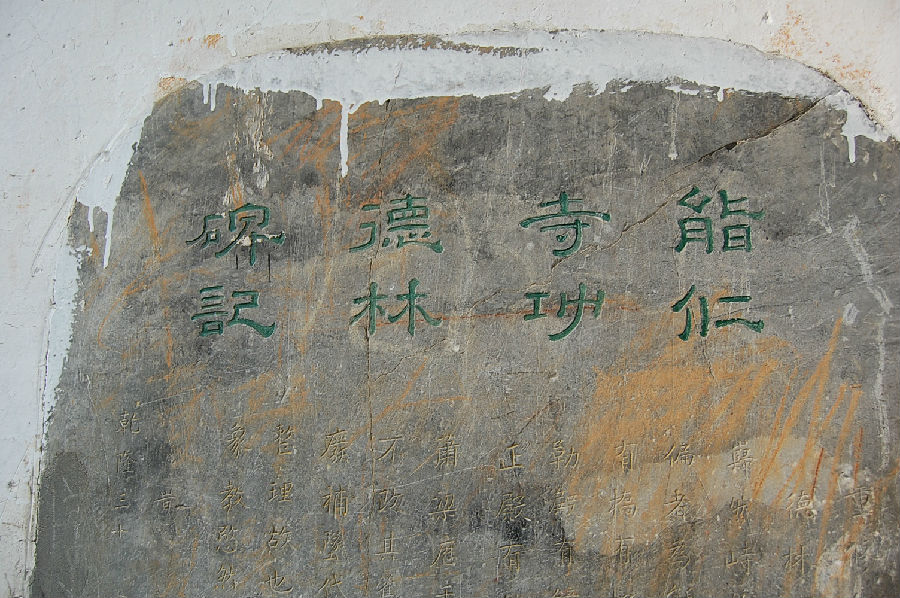

嘉兴市文物保护网 · 市级文物保护点 · 2020-11-03 · 原文

能仁寺碑刻位于嘉兴市秀洲区新塍镇蓬莱社区小蓬莱银杏园内，共有5块石碑，面朝南嵌入墙内，由西向东排开，依次为：①清康熙四十年，沈廷文《修复新塍镇能仁寺松路碑记》，高1.37米，宽0.68米，全文连同落款共629字。无额。②清乾隆二十七年，沈莘士《能仁寺功德林碑》，高1.4米，宽0.67米。全文连同落款共347字，有“能仁寺功德林碑记”额。③清道光九年，王承勲《重修能仁寺碑记》，高1.68米，宽0.85米。正文连同落款共948字，附录可见384字，另残缺37字。无额。④明万历丙申年，陆光祖《能仁寺禅堂碑记》，高2.15米，宽0.95米。全文连同落款共958字，有“禅堂碑记”额。⑤清道光八年，蔡联璧《能仁寺碑记略》，高1.63米，宽0.84米。全文连同落款共1333字。无额。能仁寺的这些碑刻为研究能仁寺提供了实证资料，具有较高的历史价值。2009年公布为嘉兴市文物保护点。